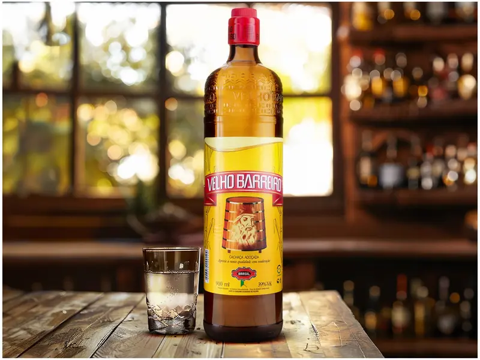

Pães
conheça o catalago de Pães da Padaria

🥖 Nossos Pães — Sabor, Tradição e Cuidado em Cada Fatia
Na Padaria Irmãos Mário, os pães são os verdadeiros protagonistas. Feitos com ingredientes selecionados e um toque de carinho caseiro, nossas receitas combinam tradição e inovação. Do crocante pão francês ao macio pão de leite, passando pelos integrais cheios de fibras e os recheados que são uma explosão de sabor
cada pão conta uma história de dedicação e amor pelo que fazemos.

🌾 Pão Integral — Nutrição que Abraça o Sabor
Feito com farinha 100% integral e fermentação natural, nosso pão integral é rico em fibras, vitaminas e afeto. Com casca levemente crocante e miolo macio e úmido, ele é perfeito para quem busca equilíbrio entre saúde e sabor. Ideal para acompanhar queijos leves, pastas naturais ou aquele café fresquinho, ele promove saciedade e bem-estar em cada mordida.
Na Padaria Irmãos Mário, o pão integral não é só uma escolha saudável
é um carinho diário para o seu corpo e sua rotina.

🧀 Pão de Queijo — Tradição Mineira em Cada Mordida
Quentinho, dourado e com aquele aroma irresistível, nosso pão de queijo é feito com polvilho selecionado e queijos artesanais que derretem na boca. Crocante por fora, macio por dentro, ele é o companheiro perfeito para o café da manhã, o lanche da tarde ou aquele momento de puro conforto.
Na Padaria Irmãos Mário, o pão de queijo não é só um clássico
é uma celebração da cultura brasileira, feita com carinho e sabor que atravessa gerações.
Doces
conheça o catalago de Doces

🍩 Sonho — Doce que Encanta Gerações
Fofinho, dourado e recheado com carinho, o nosso sonho é uma verdadeira viagem ao sabor da infância. Com massa leve e delicada, frita na temperatura ideal e polvilhada com açúcar, ele guarda no centro um recheio cremoso — seja de baunilha, doce de leite ou chocolate — que derrete na boca e aquece o coração.
Na Padaria Irmãos Mário, o sonho não é só um doce: é uma tradição que atravessa gerações, feita com ingredientes selecionados e aquele toque artesanal que transforma cada mordida em um momento especial.

🍰 Mil-Folhas — Elegância em Camadas
Delicado, crocante e cheio de charme, o nosso mil-folhas é feito com finas camadas de massa folhada dourada, intercaladas com um creme suave e aromático — seja de baunilha, doce de leite ou chocolate. Finalizado com açúcar de confeiteiro e um toque artesanal, ele é a sobremesa perfeita para quem busca sofisticação e sabor em cada mordida.
Na Padaria Irmãos Mário, o mil-folhas é mais que um doce: é uma experiência que combina tradição francesa com o carinho brasileiro.

✨ Trufas Artesanais — Sabor que Derrete o Coração
Nossas trufas são feitas com chocolate nobre e recheios cremosos que surpreendem a cada mordida. Levemente firmes por fora e incrivelmente macias por dentro, elas combinam textura e intensidade em sabores como:
- Ao leite tradicional
- Meio amargo sofisticado
- Chocolate branco com frutas cítricas
- Trufas alcoólicas
pingas
conheça o catalago de pingas

🥃 Cachaça 51 — Uma Boa Ideia em Cada Dose
Direto de Pirassununga, a Cachaça 51 é símbolo nacional e presença garantida nas rodas de samba, churrascos e caipirinhas. Com aroma suave e notas florais, ela tem sabor levemente adocicado e teor alcoólico de 39%, ideal para quem busca equilíbrio entre tradição e versatilidade. Seja pura, com limão ou em drinks criativos, a 51 é aquela boa ideia que nunca sai de moda.

🍂 Velho Barreiro — Tradição Que Se Bebe
Lançada nos anos 60 e produzida em Rio Claro (SP), a Velho Barreiro é uma das cachaças mais queridas do Brasil. Com sabor autêntico e toque levemente adocicado, ela é perfeita para caipirinhas e coquetéis tropicais. Seu rótulo icônico e aroma equilibrado fazem dela uma escolha certeira para quem valoriza história e qualidade em cada gole.
Salgado
conheça o catalago de salgados

🐔 Coxinha — O Salgado Que Conquistou o Brasil
Crosta dourada, recheio suculento e aquele formato inconfundível: a coxinha é a rainha dos balcões! Feita com massa leve e cremosa, recheada com frango desfiado temperado e, se quiser elevar o sabor, um toque de requeijão cremoso. Frita até atingir a perfeição crocante, ela é servida quentinha e pronta para conquistar qualquer paladar.
Na sua padaria,
a coxinha pode ser:
- Tradicional de frango
- Frango com catupiry
- Carne seca com queijo
- Veggie (palmito, brócolis ou cogumelos)
Cada mordida é uma viagem pela história da culinária brasileira — e um convite para voltar sempre.

🥖 Pão na Chapa — Simples, Quentinho e Irresistível
Crosta dourada, recheio suculento e aquele formato inconfundível: a coxinha é a rainha dos balcões! Feita com massa leve e cremosa, recheada com frango desfiado temperado e, se quiser elevar o sabor, um toque de requeijão cremoso. Frita até atingir a perfeição crocante, ela é servida quentinha e pronta para conquistar qualquer paladar.
Na sua padaria,
a coxinha pode ser:
- Com requeijão na entrada (dourado junto na chapa)
- Com requeijão na saída (cremoso por cima)
- Com queijo, ovo ou goiabada para os mais ousados
Aqui, o pão na chapa não é só um lanche — é um abraço em forma de comida.